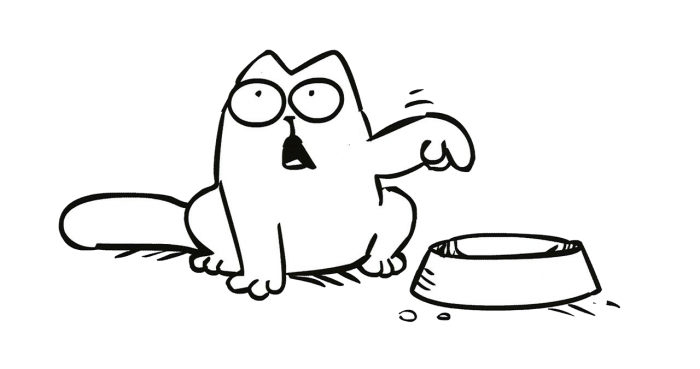

<div class="container">
  <div class="row">
    <div class="col-md-3">
      <div class="card bg-light">
        <div class="card-body">
          <h5 class="card-title">Información Personal</h5>
          <p class="card-text">Nombre: {{usuario.nombre}}</p>
          <p class="card-text">Correo: {{ usuario.correo }}</p>
          <!-- <button class="btn btn-primary">Editar Información Personal</button> -->
          <button class="btn btn-primary" (click)="abrirModal('password')">Cambiar Contraseña</button>
        </div>
      </div>
    </div>
    <div class="col-md-9">
      <div class="card mb-3">
        <div class="card-body">
          <h5 class="card-title">Gatos favoritos</h5>
          <ng-container *ngIf="favoritos && favoritos.length > 0; else blockVacio">
            <div class="row">
              <div class="col-md-4">
                <app-gato-item *ngFor="let gato of favoritos" [gato]="gato"></app-gato-item>
              </div>
            </div>
          </ng-container>
          <ng-template #blockVacio>
            <p>Aquí no hay nada...</p>
            
          </ng-template>
        </div>
      </div>
      <div class="card">
        <div class="card-body">
          <h5 class="card-title">Encuesta para adopción</h5>
          <!-- <ng-container *ngIf="usuario.nombreCompleto ; else elseBlock"> -->
          <button class="btn btn-primary" type="button" data-bs-toggle="collapse" data-bs-target="#collapseCard"
            aria-expanded="false" aria-controls="collapseCard">Ver las respuestas</button>
          <button class="btn btn-light">Cambiar las respuestas</button>
          <div class="collapse mt-3" id="collapseCard">
            <p><strong>Nombre completo:</strong> {{usuario.nombreCompleto }}</p>
            <p><strong>Dirección:</strong> {{usuario.direccion }}</p>
            <p><strong>Teléfono de contacto:</strong> {{usuario.telefono}}</p>
            <p><strong>Estás en el proceso de mudanza o tienes planificado mudarte? Qué harías si te mudas donde no se
                aceptan mascotas?</strong> {{usuario.infoMudanza}}</p>
            <p><strong>Por qué quieres adoptar un gato?</strong> {{usuario.infoPorque}}</p>
            <p><strong>Quién vive en tu casa? Alguien tiene alergias a gatos?</strong> </p>{{usuario.infoFamilia}}
            <p><strong>Cuánto estás preparado para gastar para el gato mensualmente?</strong> {{usuario.infoCostes}}
            </p>
            <p><strong>Se te ocurre alguna razón por la que podrías devolver un gato al refugio?</strong>
              {{usuario.infoAbandonar}}</p>
            <p><strong>Dónde va a vivir el gato? solo dentro de la casa, dentro y fuera, fuera</strong>
              {{usuario.infoMovimiento}}</p>
            <p><strong>Estás dispuesto a poner mosquiteras o redes para proteger todas las ventanas y puertas antes de
                adoptar al gato?</strong> {{usuario.infoProteccion}}</p>
            <p><strong>Cuál es tu experiencia con animales? Has tenido un gato?</strong> {{usuario.infoExperiencia}}.
            </p>
            <p><strong>Ante una inadaptación o problema de comportamiento en el gato que adoptes, ¿qué
                harías?</strong>
              {{usuario.infoProblemas}}</p>
            <p><strong>Háblanos un poco sobre las mascotas que tienes ahora; ¿todas las vacunas puestas?</strong>
              {{usuario.infoMascotasActuales}}</p>
            <p><strong>Háblanos sobre tus mascotas que has tenido anteriormente. ¿Qué pasó al final?</strong>
              {{usuario.infoMascotasAnteriores}}</p>
            <p><strong>¿Quién es tu veterinario? (Le vamos a contactar para comprobar los datos)</strong>
              {{usuario.infoVeterinario}}</p>
          </div>
          <!-- </ng-container> -->
          <!-- <ng-template #elseBlock> -->
          <button class="btn btn-warning" (click)="abrirModal('encuesta')">Rellenar la
            encuesta</button>
          <!-- </ng-template> -->
        </div>
      </div>
    </div>
  </div>
</div>